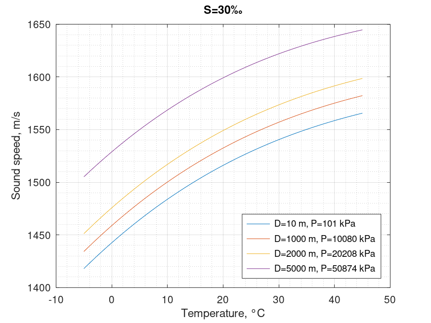

Sound speed in sea. Coppens equation
Mathematical definition
$$\boxed{\begin{array}{l} C\left( {T,S,D} \right) = C\left( {T,S,0} \right) + \left( {16.23 + 0.253T} \right)D + \left( {0.213 - 0.1T} \right){D^2}\\ + \left( {0.016 + 0.0002\left( {S - 35} \right)} \right)\left( {S - 35} \right)TD \end{array}}$$
| Notation | Definition | Conversion | Units | Limits |
|---|---|---|---|---|
| $C$ | sound speed | $m/s$ | ||
| $T$ | temperature | $\times10^{-1}$ | $^{\circ}C$ | $-2 < T < 35$ |
| $S$ | salinity | $‰$ | $0 < S < 42$ | |
| $D$ | depth | $\times10^{-3}$ | $m$ | $0 < D < 4000$ |
$$\begin{array}{l} C\left( {T,S,0} \right) = 1449.05 + 45.7T - 5.21{T^2} + 0.23{T^3}\\ + \left( {1.333 - 0.126T + 0.009{T^2}} \right)\left( {S - 35} \right) \end{array}$$
Octave/Matlab implementation
function C = sound_speed_sea_coppens(T,S,D)
% Arguments
% T: temperature \ degree Celsius \ -2 < T < 35
% S: salinity \ ppt \ 0 < S < 42
% D: depth \ m \ 0 < D < 4000
% Results
% C: speed of sound in seawater \ m/s
d = D.*(1e-3);
t = T.*(1e-1);
C = 1449.05 + 45.7*t - 5.21*(t.^2) + 0.23*(t).^3 ...
+ (1.333 - 0.126*t + 0.009*(t.^2)).*(S - 35) ...
+ (16.23 + 0.253*t).*d + (0.213-0.1*t).*(d.^2) ...
+ (0.016 + 0.0002*(S-35)).*(S-35).*t.*d;
end
Computational examples

| $D$\$T$ | $0°\text{C}$ | $10°\text{C}$ | $20°\text{C}$ | $30°\text{C}$ | $40°\text{C}$ |
|---|---|---|---|---|---|
| $10\ m$ | $1442.55$ | $1483.85$ | $1516.03$ | $1540.46$ | $1558.51$ |
| $1000\ m$ | $1458.83$ | $1500.21$ | $1532.46$ | $1556.97$ | $1575.10$ |
| $2000\ m$ | $1475.70$ | $1516.96$ | $1549.09$ | $1573.47$ | $1591.48$ |
| $5000\ m$ | $1528.86$ | $1568.56$ | $1599.12$ | $1621.93$ | $1638.38$ |
References
- Coppens, Alan B, "Simple equations for the speed of sound in Neptunian waters", 1981